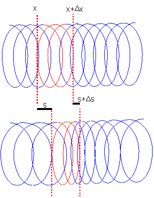
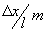
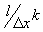
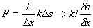
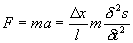
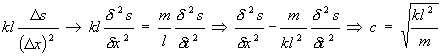

Ljudhastigheten i en fjäderliknande tråd

Betrakta fjädern ovan. (Man blir lite snurrig av att titta på den men det struntar vi i nu).
Vi ska ställa upp kraftekvationen för den röda snutten med (vilo-)längd
D x.Om hela fjädern väger m och har längden l kommer snutten att väga 
Om hela fjädern har fjäderkonstant k kommer snutten att få 
Vi ser att sammantryckningen av vår snutt är
D s och alltså är kraften på den:
Men kraften kan även uttryckas mha Newton: 
Om vi nu sätter dessa uttryck lika och0 tecknar kraften per längdenhet på fjädern (dvs dividerar med
D x i bägge led) får vi: